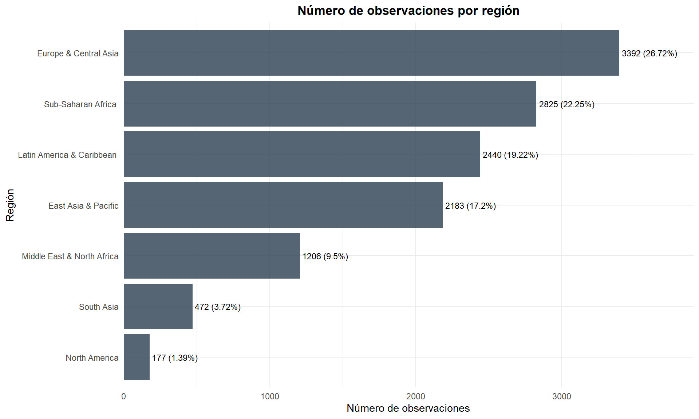
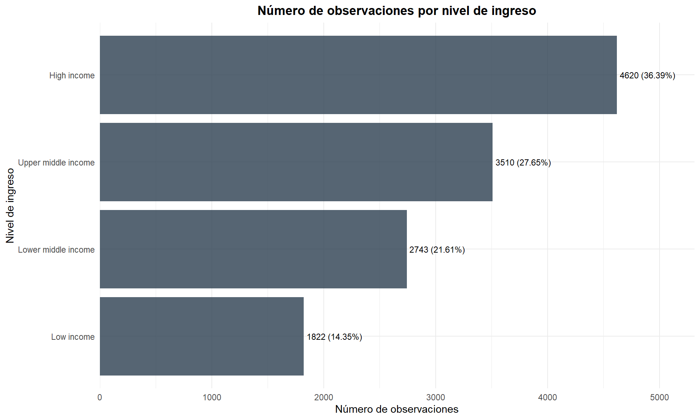
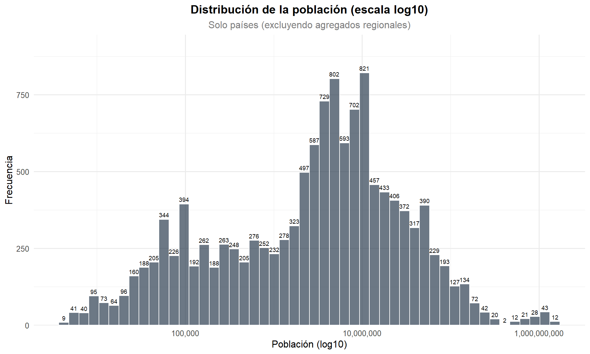
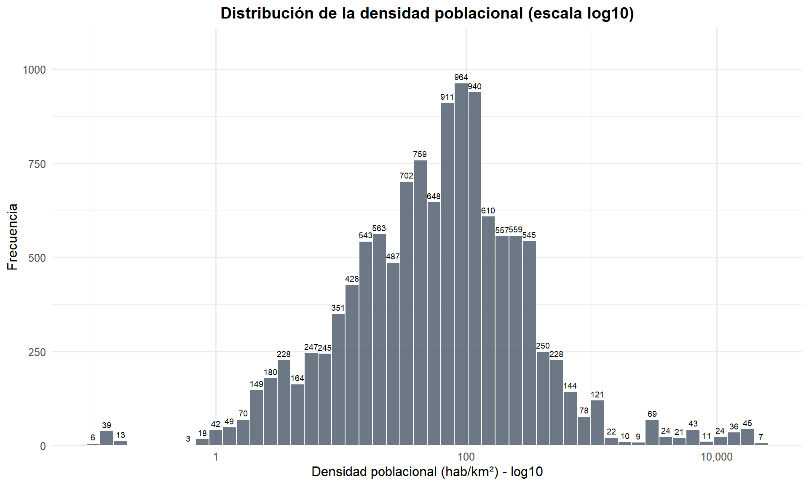
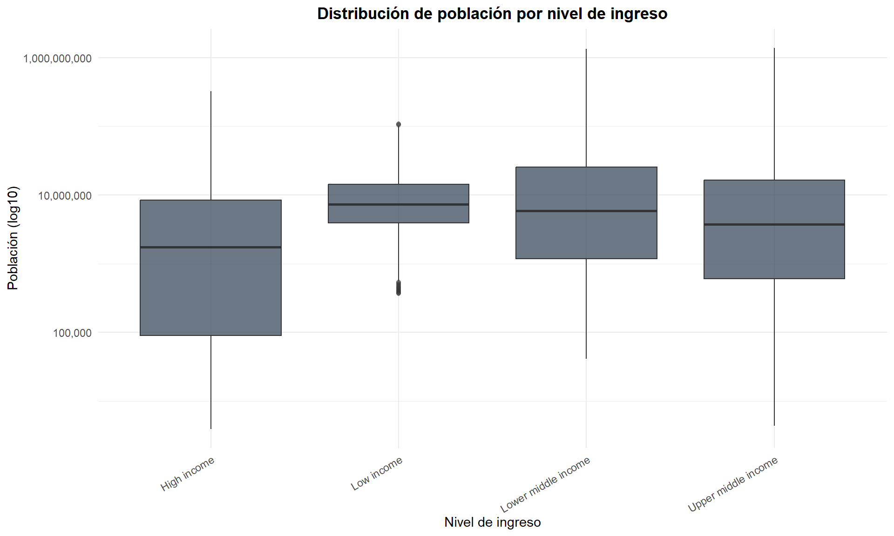

Capítulo 4 Distribución de Variables
4.1 Composición del dataset
resumen_cat <- data.frame(
Metrica = c("Países/entidades únicas", "Rango de años", "Regiones únicas",
"Niveles de ingreso", "Filas (solo países)", "Países únicos (sin agregados)"),
Valor = c(
n_distinct(df$country),
paste(min(df$year, na.rm = TRUE), "-", max(df$year, na.rm = TRUE)),
n_distinct(df$region),
n_distinct(df$incomeLevel),
nrow(df_paises),
n_distinct(df_paises$country)
)
)
kable(resumen_cat, caption = "Composición general del dataset")| Metrica | Valor |
|---|---|
| Países/entidades únicas | 264 |
| Rango de años | 1960 - 2018 |
| Regiones únicas | 9 |
| Niveles de ingreso | 6 |
| Filas (solo países) | 12695 |
| Países únicos (sin agregados) | 217 |
region_counts <- df %>%
count(region, sort = TRUE) %>%
mutate(Porcentaje = round(n / sum(n) * 100, 2))
kable(region_counts, caption = "Observaciones por región (frecuencia y porcentaje)")| region | n | Porcentaje |
|---|---|---|
| Europe & Central Asia | 3422 | 21.97 |
| Sub-Saharan Africa | 2832 | 18.18 |
| Aggregates | 2655 | 17.05 |
| Latin America & Caribbean | 2478 | 15.91 |
| East Asia & Pacific | 2183 | 14.02 |
| Middle East & North Africa | 1239 | 7.95 |
| South Asia | 472 | 3.03 |
| North America | 177 | 1.14 |
| NA | 118 | 0.76 |
ggplot(region_counts, aes(x = reorder(region, n), y = n)) +
geom_bar(stat = "identity", fill = COLOR_PRINCIPAL, alpha = 0.8) +
geom_text(aes(label = paste0(n, " (", Porcentaje, "%)")),
hjust = -0.05, size = 3) +
coord_flip() +
labs(title = "Número de observaciones por región",
x = "Región", y = "Número de observaciones") +
theme_minimal(base_size = 11) +
theme(plot.title = element_text(face = "bold", hjust = 0.5)) +
scale_y_continuous(expand = expansion(mult = c(0, 0.15)))
Figure 4.1: Distribución de observaciones por región
income_counts <- df %>%
count(incomeLevel, sort = TRUE) %>%
mutate(Porcentaje = round(n / sum(n) * 100, 2))
kable(income_counts, caption = "Observaciones por nivel de ingreso (frecuencia y porcentaje)")| incomeLevel | n | Porcentaje |
|---|---|---|
| High income | 4661 | 29.92 |
| Upper middle income | 3540 | 22.73 |
| Lower middle income | 2773 | 17.80 |
| Aggregates | 2655 | 17.05 |
| Low income | 1829 | 11.74 |
| NA | 118 | 0.76 |
ggplot(income_counts, aes(x = reorder(incomeLevel, n), y = n)) +
geom_bar(stat = "identity", fill = COLOR_PRINCIPAL, alpha = 0.8) +
geom_text(aes(label = paste0(n, " (", Porcentaje, "%)")),
hjust = -0.05, size = 3) +
coord_flip() +
labs(title = "Número de observaciones por nivel de ingreso",
x = "Nivel de ingreso", y = "Número de observaciones") +
theme_minimal(base_size = 11) +
theme(plot.title = element_text(face = "bold", hjust = 0.5)) +
scale_y_continuous(expand = expansion(mult = c(0, 0.15)))
Figure 4.2: Distribución de observaciones por nivel de ingreso
Las regiones con mayor representación son las que contienen mayor cantidad de países (África Subsahariana, Europa y Asia Central). La categoría “Aggregates” corresponde a totales regionales y mundiales que el Banco Mundial incluye como filas separadas; es fundamental filtrarlos para evitar doble conteo en análisis a nivel de país.
4.2 Variables numéricas
4.2.1 Distribución de la población
ggplot(df_paises, aes(x = population)) +
geom_histogram(bins = 50, fill = COLOR_PRINCIPAL, alpha = 0.7, color = "white") +
scale_x_log10(labels = comma) +
labs(title = "Distribución de la población (escala log10)",
subtitle = "Solo países (excluyendo agregados regionales)",
x = "Población (log10)", y = "Frecuencia") +
theme_minimal(base_size = 12) +
theme(plot.title = element_text(face = "bold", hjust = 0.5),
plot.subtitle = element_text(hjust = 0.5, color = "grey50"))
Figure 4.3: Distribución de la población en escala logarítmica
4.2.2 Distribución de la densidad poblacional
ggplot(df_paises %>% filter(!is.na(pop_density)), aes(x = pop_density)) +
geom_histogram(bins = 50, fill = COLOR_PRINCIPAL, alpha = 0.7, color = "white") +
scale_x_log10(labels = comma) +
labs(title = "Distribución de la densidad poblacional (escala log10)",
x = "Densidad poblacional (hab/km²) - log10", y = "Frecuencia") +
theme_minimal(base_size = 12) +
theme(plot.title = element_text(face = "bold", hjust = 0.5))
Figure 4.4: Distribución de la densidad poblacional en escala logarítmica
La distribución de la densidad poblacional es fuertemente asimétrica (sesgada a la derecha), confirmando que la mayoría de países tienen densidades poblacionales relativamente pequeñas, mientras unos pocos países concentran gran parte de la densidad poblacional mundial.
4.2.3 Población por nivel de ingreso
ggplot(df_paises %>% filter(!is.na(population) & !is.na(incomeLevel)),
aes(x = incomeLevel, y = population)) +
geom_boxplot(fill = COLOR_PRINCIPAL, alpha = 0.7, outlier.alpha = 0.4) +
scale_y_log10(labels = comma) +
labs(title = "Distribución de población por nivel de ingreso",
x = "Nivel de ingreso", y = "Población (log10)") +
theme_minimal(base_size = 11) +
theme(plot.title = element_text(face = "bold", hjust = 0.5),
axis.text.x = element_text(angle = 30, hjust = 1))
Figure 4.5: Distribución de población por nivel de ingreso
El boxplot por nivel de ingreso sugiere que los países de ingreso medio-bajo tienden a tener poblaciones mayores, consistente con el hecho de que India y varias naciones del Sudeste Asiático y África pertenecen a esta categoría.